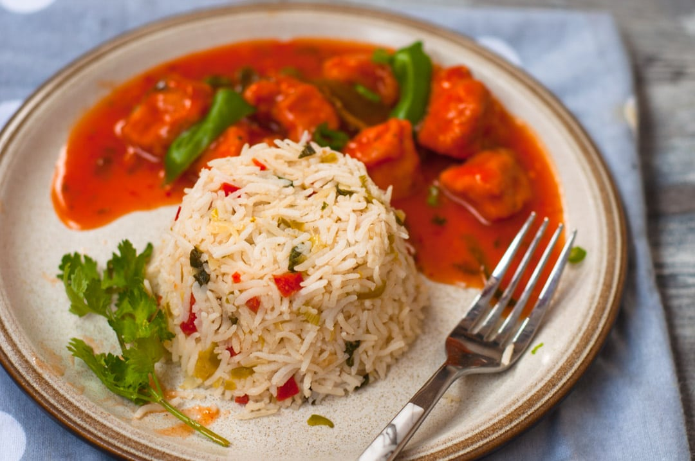

Veg Fried Rice

How to make Veg Fried Rice Recipe
- Rice:
- Soak rice for 20 minutes at least or follow instructions on the pack. Some variety of basmati like Sella require 90 minutes of soaking.
- Boil water in a large pot. Also, add salt and a few drops of lemon juice. (Water should have soupy salt level, lemon is added to bring out the bright white color of rice.)
- When water begins to boils add soaked rice and cook for 7-10 minutes or as per instructions on the rice pack. (We want 1Kani or 80% cooked rice.)
- Strain rice in a colander and set aside. Let it cool completely. (Or keep in the fridge if time allows as cold rice works best.)
- Meanwhile, cut the veggies and set aside
- Seasoning for Indian Veg Fried Rice:
- In a large and wide pot, heat oil and add garlic, chicken cube/bullion/ base, chopped chilies, and pepper. Stir and cook for few seconds.
- Now, mix in veggies, soy sauce, sugar, and vinegar. Cook for 1 minute on medium heat with constant stirring.
- Add rice and green onions.
- Cook on high heat for 2 minutes. In between mix the rice after every few seconds with big strokes to turn rice up and down. Aim for 8-10 strokes as over-mixing can break the rice. When rice and veggies are thoroughly mixed.
- Reduce heat to medium and cover the pot. Cook for another 4-5 minutes until thoroughly heated then serve.